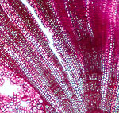

|
 |

{kind=link}
RECENT WORK
Bigger Vistas: some synthesis papers. How does one build one's career as one ages? The answers are various. There are always lesser papers to write—and that's fun. But the nagging thought that accompanies a scientist into his latter years is what remains to be done in a field. Can he do it, or should it be left to younger hands? Often, this is simply a matter of financing. Most fields of science are grant-intensive, and in such fields, the senior scientists understandably lessen activity as money becomes less available. Fortunately, the study of plant structure is one of the less expensive fields, although some laboratory facilities and supplies are needed. I have been lucky to have these available. Some work is logistically out of reach, but there are always things one can do if one is interested in science. Many interesting questions can be answered with relatively little expenditure. Amateurs can and do contribute to various fields of science.
I have always enjoyed looking at bigger vistas in plant biology. Big syntheses, however, are made of numerous smaller pieces. The smaller pieces are interesting, and one is tempted to stay with them. Less risk, shorter study and writing episodes and more certainty of results, greater ease of publication. However, the bigger pictures (this is, findings that apply to a larger number of plants) are more challenging and therefore more rewarding when dealt with satisfactorily. One could say one very tall mountain is more rewarding to climb than a dozen half the height.
Wood anatomy is particularly complex, it's not always easy just to identify cell types and accurately describe what is going on in a wood. In fact, those botanists whose specialty is not wood anatomy are daunted (and perhaps should be) by the complexity and diversity of woods—and the fact that adequate mentoring in this field is so rare (to no small extent, one teaches one's self—and that takes motivation and time). But during my career in the field, I wanted to know the whole story. How do woods work? Why are there so many different woods? What controls wood evolution?
Even these big questions must be answered with more than one monograph. The book Comparative Wood Anatomy did take some of those stories as far as it could when the two editions of that book were published. But science moves on. I t seems obvious that there will not be a third edition of that book. So the new papers that are on this site can be considered like an updating. The descriptive material in Comparative Wood Anatomy is still entirely valid. But the evolutionary pictures are changed as new data—some from unexpected sources—becomes available. Molecular trees of phylogeny have altered our ideas of how wood evolves. So have scanning electron microscope studies and experiments in wood physiology. The new emerging pictures must fit all known facts—so one should know everything related to wood structure and function, but no one person does have all that knowledge at hand. However, the amazing thing about having studied in this field more than 60 years is that I have been able to accumulate more information, but also, more insights. Evolutionary biologists tend to access bigger ideas later in life.
Most of the interesting findings are referenced under Wood Evolution and under Ferns and Monocots in this site, so look at subheadings there as though you were reading a new book on these fields.